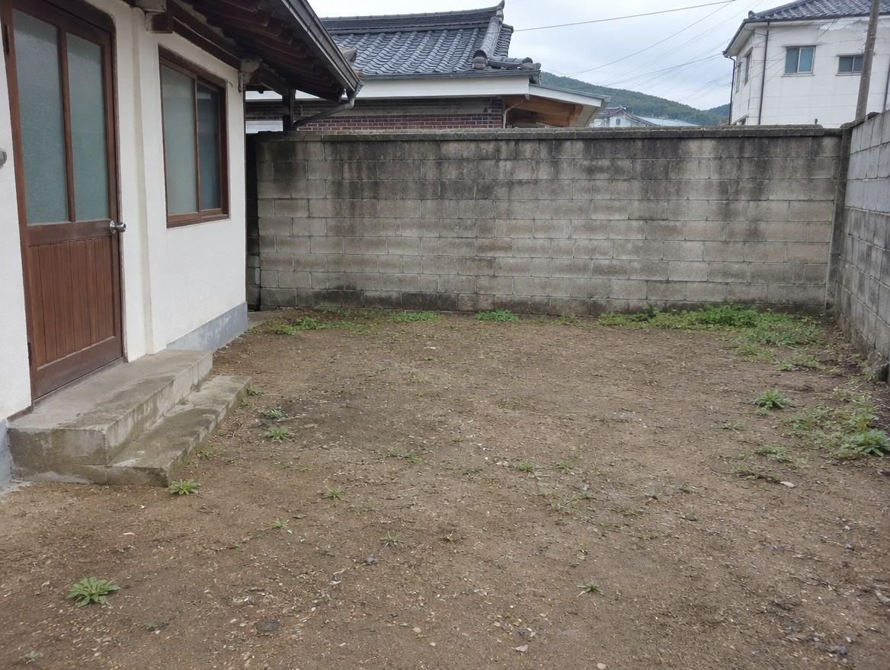
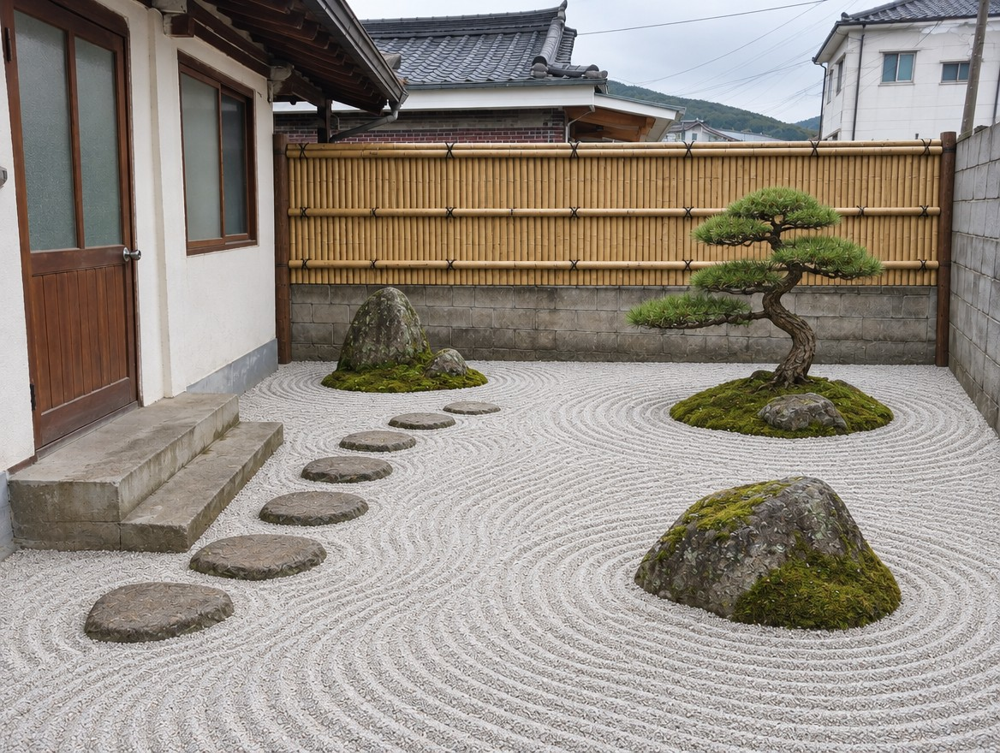
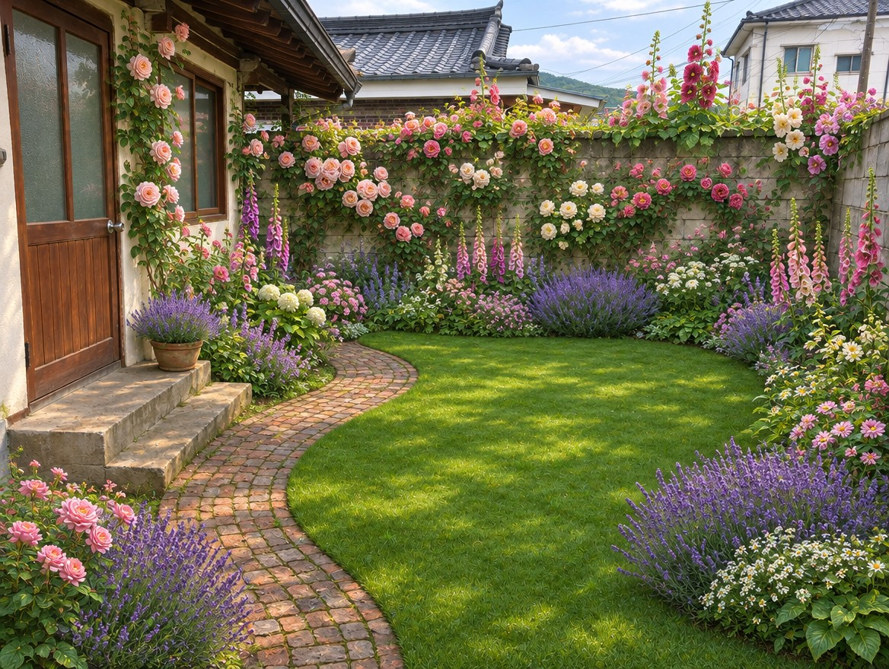
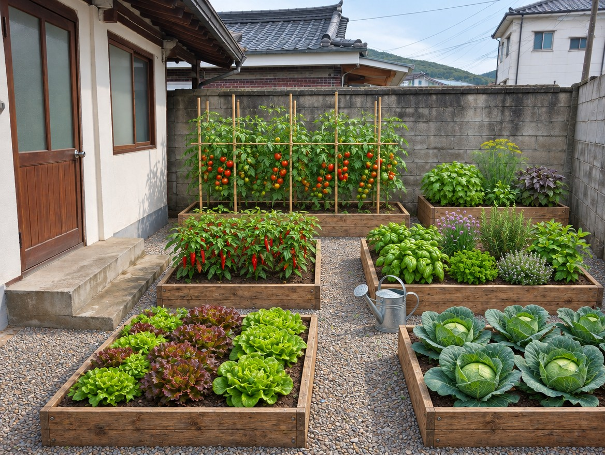
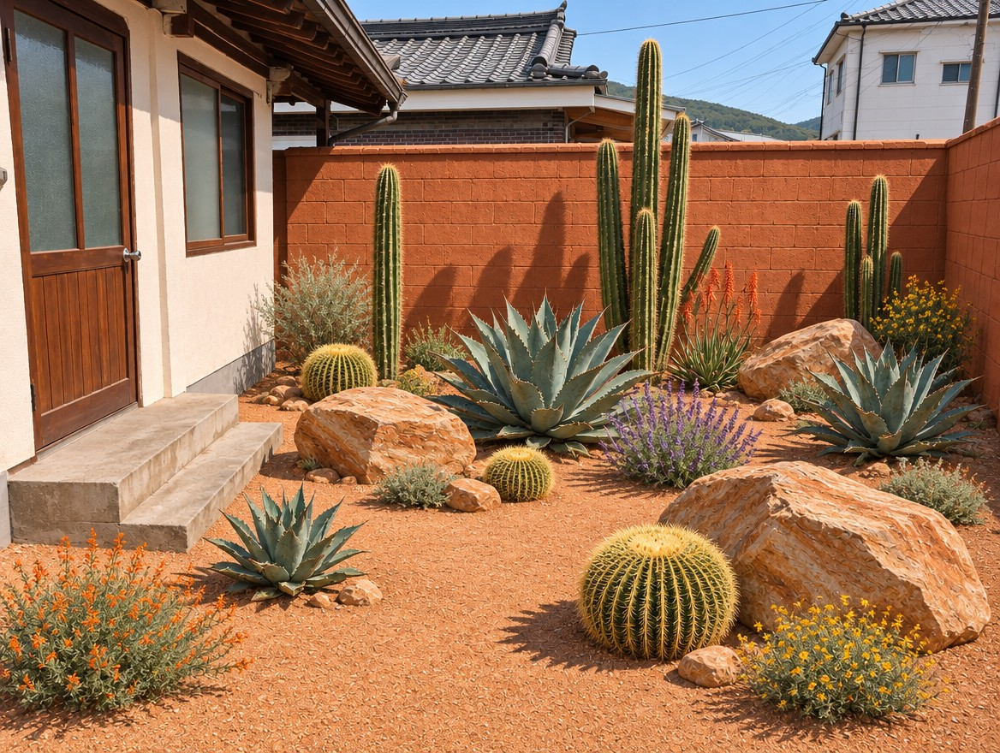
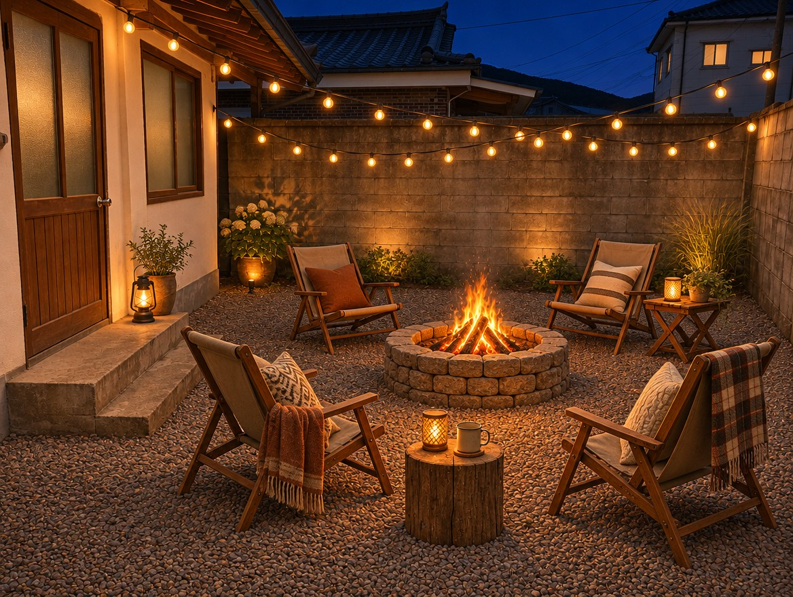

AI 문방구 · 정원 5
흙뿐인 빈 마당
→ 정원 5가지
댓글로 신청해주셔서 고마워요. 영상 속 정원은 전부 힉스필드(GPT Image 2.6)에 빈 마당 사진 한 장을 넣고 정원 스타일 문장만 바꿔 만든 결과예요. 공사 전에 분위기 미리 보는 용도로 써보세요.
BASE원본 빈 마당 사진 (전)

01zen garden
자갈 물결무늬
흰 자갈에 물결을 긋고 이끼 바위를 놓아요.
전

후The exact same backyard, same wall, same door and steps, same camera angle, transformed into a Japanese zen garden: raked white gravel with ripple patterns, a few large mossy rocks, one small pruned pine, stepping stones from the door, bamboo fence panel. No text, no logos
02cottage garden
꽃 가득한 담장
장미와 라벤더가 담장을 덮고 벽돌길이 나요.
전

후The exact same backyard, same wall, same door and steps, same camera angle, transformed into an English cottage garden overflowing with flowers: roses, foxgloves, lavender, hollyhocks, climbing roses on the wall, curved brick path, lush lawn. No text, no logos
03kitchen garden
상자 텃밭
나무 화단마다 상추, 양배추, 토마토가 자라요.
전

후The exact same backyard, same wall, same door and steps, same camera angle, transformed into a kitchen vegetable garden: raised wooden planter boxes with lettuce, cabbage, staked tomatoes, chili peppers and herbs, gravel paths between boxes. No text, no logos
04desert garden
선인장과 큰 돌
선인장, 아가베, 사암 바위로 채우고 벽은 테라코타색이에요.
전

후The exact same backyard, same wall, same door and steps, same camera angle, transformed into a desert xeriscape garden: tall columnar cacti, agave, barrel cacti, large sandstone boulders, orange-tan gravel ground, wall painted terracotta. No text, no logos
05fire pit patio
전구와 모닥불
밤이 되면 줄 전구 아래 모닥불이 켜져요.
전

후The exact same backyard, same wall, same door and steps, same camera angle, at night transformed into a cozy camping patio: round stone fire pit with a glowing campfire, warm string lights above, wooden deck chairs, gravel ground. No text, no logos
HOW내 사진으로 하는 법
마당 전체가 보이게 눈높이에서 찍은 사진을 올리고 [ ]만 바꾸세요. "same wall, same door, same camera angle"을 넣어야 우리 집 구조가 그대로 남아요.
The exact same backyard, same wall, same door, same camera angle, transformed into [정원 스타일]. No text, no logos